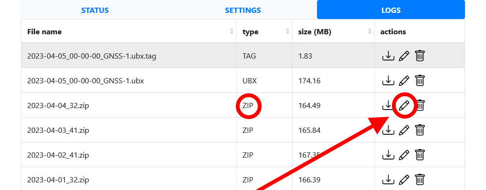
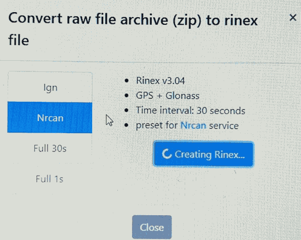
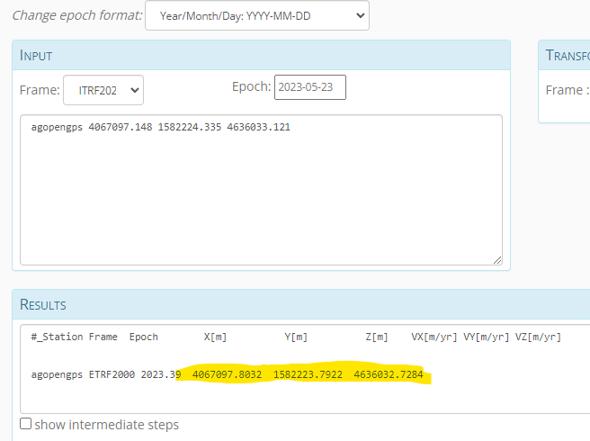

First download your log files from the
Raspberry PI
Open the LOGS tab (if you have File Service running in settings!) then pick the pencil:

Choose the NRCAN option and download the Rinex file.

Open the
NRCAN
site and do a Static ITRF
calculation to get the ITRF position.
In the NRCAN mail, please click on Summary and copy the whole thing here: (example provided)
The estimated coordinates ITRF20 2023-05-23 for the 2023-05-24-MP8156_nrcan.obs RINEX file are as follows: Latitude N46° 55' 23.3370" ± 0.002 m (95%) Longitude E21° 15' 27.1687" ± 0.002 m (95%) Ellipsoidal Height 135.786 m ± 0.008 m (95%) [46.92314917,21.25754686,135.786] UTM Zone 34 (North) Northing 5196656.204 m Easting 519608.202 m Scale factor (point) 0.99960473 Scale factor (combined) 0.99958345 [5196656.204,519608.202,135.786] Cartesian coordinates X 4067097.148 ± 0.006 m (95%) Y 1582224.335 ± 0.003 m (95%) Z 4636033.121 ± 0.006 m (95%) [4067097.148,1582224.335,4636033.121] Orbits and Clocks Used: NRCan Rapid GNSS Data: GPS & GLONASS GRS80 ellipsoid used for (x,y,z) to (lat,lon,h) transformation
Epoch
Cartesian coords
Please copy these parameters: 
then open this tool:
Cartesian -> WGS84
Left side pick: WORLD + Cartesian (XYZ) and put your X Y Z values
Right side pick: Deutschland + WGS84 and the results will show up here :)
Then copy back this result to the PI and you're good to go :)
Lat Lon H is the order
Distance calculator
Idea came from:
Geocomms forum
Changelog: